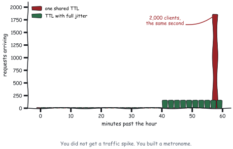

Deployment and Operations
Operations is unglamorous compounding. Health checks that mean something, drains that actually drain, alerts that fire before a user notices. None of it is clever, and all of it is what makes three in the morning uneventful.
The good news for MCP specifically is that the stateless core deleted most of the hard parts of this chapter before it was written. If you deployed a 2025-era server you spent real effort on session affinity, a session store, and draining state during a deploy. All three of those problems are simply gone.
What statelessness bought you
Worth listing explicitly, because if you deployed a 2025-era MCP server you spent real effort on all of these.
| Concern | Handshake era | 2026-07-28 |
| Load balancing | Sticky sessions, session affinity | Round robin |
| Session store | Redis, or affinity you regret | None |
| Scaling out | Drain sessions, migrate state | Add a replica |
| Deploys | Sessions break or must migrate | Requests retry |
| Serverless | Awkward at best | First-class |
| Crash recovery | Rebuild session state | Lose one request |
Three topologies
stdio sidecar
One server process per host, launched as a subprocess. No network.
Good for: local tools, filesystem access, developer machines, anything where the user’s own credentials are the right credentials.
Operational profile: no ports, no TLS, no auth infrastructure. The process boundary is the isolation boundary. Cold start is 44.6 ms, which Chapter 17 says to amortise with a pool.
Watch for: the server inheriting more environment than it should. A subprocess gets the parent’s environment by default, including credentials for things it has no business touching.
# sketch: condensed for the page
self._proc = subprocess.Popen(
command,
stdin=subprocess.PIPE, stdout=subprocess.PIPE,
stderr=subprocess.PIPE if capture_stderr else None,
env={**os.environ, **(env or {})},
...
)Meridian merges the parent environment because it is a book. A hardened launcher passes an explicit allowlist instead.
Containerised Streamable HTTP
The default for anything shared, and the whole deployment is a container behind a load balancer:
FROM python:3.13-slim
WORKDIR /app
COPY meridian/ ./meridian/
ENV PYTHONUNBUFFERED=1
EXPOSE 8931
CMD ["python3", "-m", "meridian.serve", "risk", "--http", "8931"]PYTHONUNBUFFERED=1 matters more than it looks: buffered stderr means your logs arrive in 4 KB chunks, which during an incident means they arrive after you needed them.
Behind it, a plain round-robin load balancer. No affinity configuration. That is the entire deployment story now.
Serverless
Good for: spiky traffic, low steady-state volume, and anything where you would rather not run a fleet.
The catch, and it is the whole catch: cold start. Your first request pays interpreter boot plus imports plus whatever runs at module scope. Meridian’s servers/data.py builds 240 accounts, 1,440 transactions, and 120 filings at import time, which is fine at 40 ms and would not be at four seconds.
Two rules for serverless MCP servers:
Nothing expensive at module scope. Lazy-load anything heavy, so a cold container answers
tools/listwithout loading your scoring model.Tasks need external storage. Obviously, but people forget: a container that answered
tools/callwill not be the one that answerstasks/get.
Health checks that mean something
Most MCP health checks are wrong, and in an interesting way. They check that the process is listening, which tells you almost nothing.
A useful health check exercises the protocol:
def healthy(server) -> tuple[bool, dict]:
"""Health means `server/discover` answers correctly, not that a port is open.
Answering discovery proves routing, capability derivation, and
serialisation all work, which is three subsystems for one request.
"""
probe = {
"jsonrpc": "2.0", "id": "health", "method": "server/discover",
"params": {"_meta": {
KEY_PROTOCOL_VERSION: PROTOCOL_VERSION,
KEY_CLIENT_CAPABILITIES: {},
}},
}
response = server.handle(probe)
if response is None or "error" in response:
reason = (response or {}).get("error", {}).get("message", "no response")
return False, {"reason": reason}
result = response["result"]
ok = (PROTOCOL_VERSION in result.get("supportedVersions", [])
and bool(result.get("capabilities")))
return ok, {
"capabilities": sorted(result.get("capabilities", {})),
"supportedVersions": result.get("supportedVersions", []),
}Three levels, and use all three:
| Check | Proves | Frequency |
| Liveness: process responds | It has not deadlocked | seconds |
Readiness: server/discover returns capabilities |
Routing and serialisation work | seconds |
| Deep: one real tool call against a known fixture | Dependencies are reachable | minutes |
Graceful drain
Statelessness removes most of the difficulty here, because there is no session state to migrate and no affinity to preserve. There is still a right order, and step three is the one specific to MCP.
Fail readiness. The load balancer stops sending new requests.
Finish in-flight requests. They are short. Give them a bounded window.
Close
subscriptions/listenstreams gracefully. This is the MCP-specific step and it is the one people miss.Exit.
Step three deserves attention. A subscription stream that just dies tells the client nothing. A stream that closes with the response to its originating request tells it “this ended on purpose”:
def close_gracefully(self) -> None:
"""End the subscription with a proper JSON-RPC response.
A stream that just dies tells the client nothing. A stream that closes
with the response to the original `subscriptions/listen` request tells
it "this ended on purpose, do not reconnect in a panic". The difference
matters at three in the morning.
"""
self._send_raw(jsonrpc.result_response(
self.id, {"_meta": {KEY_SUBSCRIPTION_ID: self.id}}))
self.closed = TrueWithout it, every client treats your rolling deploy as an outage and reconnects immediately, all at once, to the replicas that are still up.
On stdio, drain means honouring EOF on stdin:
def close(self, timeout: float = 5.0) -> None:
try:
self._proc.stdin.close()
except Exception:
pass
try:
self._proc.wait(timeout=timeout)
except subprocess.TimeoutExpired:
# Escalate only if the server ignored the EOF on stdin.
self._proc.terminate()Rolling out a capability change
The awkward case: you are adding a tool, and for a while some replicas have it and some do not.
Three mitigations, and use the first two always:
Deploy the handler before the declaration. Ship a release where the tool works but is not listed. Then ship a release that lists it. Now no replica ever advertises something it cannot do.
Keep TTLs short enough that the window closes. Meridian’s tools/list TTL is five minutes, so a deploy is fully visible within five minutes of finishing.
Emit listChanged when the rollout completes. Clients with an open subscription refetch immediately instead of waiting out the TTL.
Removal runs in reverse: stop listing it, wait for the TTL plus a margin, then delete the handler. And if it is a public server, apply the deprecation window from Chapter 2 to your own surface. Your callers deserve the same twelve months the specification gives you.
Multi-tenancy without sessions
Tenancy used to ride on the session. There is no session, so it rides on the credential, which is better.
def visible_tools(self, ctx: RequestContext) -> list[Tool]:
"""Override to filter by scope. The set may vary by authorization,
never by connection."""Four rules:
Tenant comes from the token, never from an argument. A tenant id in arguments is a suggestion from a model that read attacker-controlled text. A tenant id in a validated token claim is a fact.
Fold tenancy into every cache key. Meridian folds the auth context in unconditionally, public or private, precisely so a mislabelled response cannot leak across tenants.
Bind MRTR state to the principal. Chapter 8 covers it. Across tenants it is the difference between an approval and an incident.
Put the tenant in baggage for tracing, and nothing else. Sliceable traces, no sensitive data crossing trust boundaries.
Alerting
Chapter 16 covered the protocol alerts. These are the operational ones, and each has an MCP-specific flavour.
| Alert | Symptom | Usual cause |
| Tool-call loop | Same tool, same arguments, many times in one task | Unhelpful error message; the model cannot self-correct |
| Subscription storm | subscriptions/listen count spikes |
A deploy dropped streams without graceful closure |
| Timeout spike on one method | p99 up on tools/call, flat elsewhere |
One tool’s dependency is degraded |
| Cache stampede | Request spike at a TTL boundary | Synchronised TTLs; add jitter |
| Task store growth | Store size climbing without bound | Expiry sweep not running |
The tool-call loop deserves elaboration because it is uniquely agentic. A model calls a tool, gets an unhelpful error, retries identically, gets the same error, and repeats until the step budget stops it. Every cycle is a full model turn. Nothing is down, nothing errors at the infrastructure level, and your bill goes up.
The fix is Chapter 5: error messages a model can act on. The alert is a detector for having failed to do that.
Cache stampede is worth a sentence too. A thousand clients that started together have synchronised TTLs, so they all expire together and all refetch together. Jitter the TTL by a few percent per client and the herd disperses.
Capacity planning
The useful thing about MCP servers: they are ordinary request-response services and your existing capacity model applies.
The unusual thing: your traffic shape is driven by loop iterations, not by user actions. One user request becomes three model turns becomes three tool calls, sometimes fanned out in parallel bursts.
So plan for the burst. From Chapter 16, work forward:
tasks/second x round trips/task
= requests/second (mean)
requests/second (mean) x fan-out width
= concurrent requests at the burstMeridian at 100 tasks/second: 3 round trips each is 300 requests/second mean, and a fan-out of 3 means bursts of up to 900 concurrent. Provisioning for the mean gives you a service that falls over during every parallel fan-out, which is to say during every task.

Little’s Law, which sizes your pools
That arithmetic has a name, and knowing it turns capacity planning from guesswork into a division.
Little’s Law says that for any stable system, the average number of items inside it equals the arrival rate multiplied by the average time each spends inside:
L = lambda * W
L concurrent requests in flight
lambda arrival rate, requests per second
W average time in the system, secondsIt holds regardless of the arrival distribution, the service-time distribution, or the scheduling order. The only requirement is that the system is stable, which is to say arrivals are not outrunning departures. That generality is what makes it worth memorising.
Now use it. Meridian’s compliance server handles 300 requests per second with a mean service time of 8 milliseconds:
L = 300 * 0.008 = 2.4 concurrent requestsTwo and a half. A thread pool of 8 looks generous, and this is precisely how people arrive at a pool that collapses under a fan-out, because the mean is the wrong input. Substitute the burst instead: 900 concurrent arrivals at 8 milliseconds needs 900 × 0.008 = 7.2, and if a downstream dependency degrades and service time goes to 200 milliseconds, the same arrival rate needs 900 × 0.2 = 180.
That last calculation is the important one, and it is why the “slow dependency” row in the load-test table exists. Concurrency requirements scale linearly with service time, so a dependency that gets 25 times slower needs 25 times the in-flight capacity to sustain the same throughput. A pool sized for the healthy case starts queueing, queueing adds latency, added latency raises W, and a higher W needs a bigger L than you have. That loop is what a congestion collapse looks like from the inside.
Run the same division for every bounded resource in the path: worker threads, the HTTP connection pool from Chapter 17, database connections, and the file descriptors all three consume. The one you did not size is the one that fails first.
Load testing to failure
Load testing an agent system exercises something different from load testing an API, because the traffic shape is generated by loop iterations rather than by users pressing buttons.
| Test | What it finds | Why MCP-specific |
| Sustained load | Steady-state capacity | Baseline |
| Burst load | Fan-out behaviour | Real traffic is bursty by construction |
| Cold cache | Load with no client caching | Your first minute after a deploy |
| Split catalogue | Half the replicas on the new version | The deploy window above |
| Slow dependency | Behaviour when a downstream is degraded | Timeouts consume step budgets |
What breaks first
From running Meridian’s compliance server under load, in the order it happened:
Thread pool exhaustion under fan-out. Bursts are three times mean concurrency and the pool was sized for the mean.
The audit log became the bottleneck. Every call writes a record synchronously, so the log’s write path caps your throughput. Batch it, or write it asynchronously with a durable queue in front.
SSE streams accumulated. Clients that vanish without closing leave streams open. Keep-alives detect it; without them, file descriptors leak until the process stops accepting connections.
None of those are protocol problems. All three are consequences of the traffic shape the protocol produces.
Configuration and secrets
| Setting | Notes | Scope |
| MRTR signing secret | Rotatable, verify old and new during rotation | fleet |
| Task store URL | Shared and durable | fleet |
| TTL values | Tune per resource, jitter per client | fleet |
| Auth issuer, audience | Per environment | fleet |
| Page size | Balance round trips against response size | per server |
| Extension toggles | Only if implemented | per server |
Rotating the MRTR secret needs care, because an in-flight elicitation may be sealed with the old key. Accept both during the rotation window, sign only with the new one, and make the window longer than the state TTL. Otherwise every approval in flight at rotation time fails, and the failure looks exactly like tampering.
Meridian in production
internet
|
[ API gateway ] TLS, OAuth, rate limits,
| routes on Mcp-Method / Mcp-Name
+---------------+---------------+
| | |
[ risk x3 ] [ compliance x2 ] [ fraud x3 ] [ marketdata x2 ]
| | | |
+---------------+---------------+---------------+
|
[ shared task store ] durable, expiring
[ signing secret ] from the secret managerEvery replica count above one is possible because there is nothing to make sticky. The gateway routes on headers without parsing bodies, caches public results from market data, and enforces per-method rate limits.
The runbook
A runbook is what you want written down before you need it. The test of one is whether somebody who did not build the system can follow it at four in the morning.
| Symptom | First thing to check |
| Intermittent failures, roughly 1 − 1/N | Per-process state: signing secret, task store, cache |
| Clients cannot connect at all | Era mismatch. Probe with server/discover by hand |
| Everything times out on stdio | Something wrote to stdout |
| Latency up, server metrics flat | Iterations per task. It is a round-trip problem |
| Cost up, latency flat | Catalogue tokens. Somebody added tools |
| Cache hit rate collapsed | TTLs changed, or tools/list ordering went unstable |
| Streaming stopped working through the proxy | X-Accel-Buffering: no |
| Approvals failing since the deploy | Signing secret rotation window too short |
What to remember
Statelessness deleted sticky sessions, session stores, and session migration. If you still need affinity, find the per-process state.
Health checks should call
server/discover, not open a socket. Do not useping; it was removed.Drain in order, and close subscription streams gracefully or every deploy looks like an outage.
Deploy the handler before the declaration; remove the declaration before the handler.
Tenancy comes from the token, folds into every cache key, and binds MRTR state.
Plan capacity for the fan-out burst, not the mean.
Alert on tool-call loops. They cost money while every dashboard stays green.
Jitter your TTLs.
Rotate the MRTR signing secret with an overlap window longer than the state TTL.
That closes Part IV. You can build it, measure it, make it fast, and run it. Part V is about the people trying to break it.